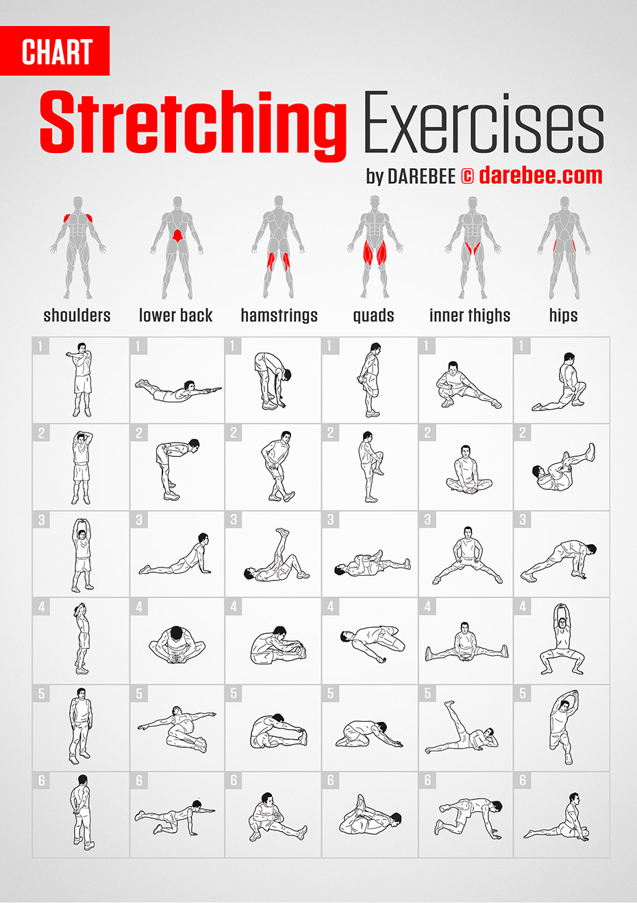

Cat–Cow
On hands and knees, alternate arching and rounding the spine, syncing with the breath.
8 slow rounds · ~45 sec
A small daily stretching habit pays back tenfold: better posture, fewer tweaks, easier mornings, and recovery that sticks. Browse the library, filter by area or time of day, or follow a ready-made set.
Three to seven stretches, sequenced. The morning set wakes the body up; the others target specific moments in your day.
A gentle wake-up sequence that lubricates the spine, opens the hips, and gets blood moving — do it next to the bed before your first coffee.
Total: ~5 minutes · No equipment · Filter by Morning below to see each move.
Counters hours of typing and screen-staring. Do once mid-morning and once mid-afternoon.
Total: ~3 minutes · Do at your desk.
Static holds after training, while muscles are warm — the time most research suggests stretching actually improves range.
Total: ~6 minutes · After strength or cardio.
Slow, floor-based holds that nudge the nervous system toward rest. Pairs well with the sleep guide.
Total: ~4 minutes · On the bedroom floor or in bed.

Search by name or tap a tag to narrow by body area or moment of the day.
On hands and knees, alternate arching and rounding the spine, syncing with the breath.
Knees wide, hips back to heels, arms long in front. A gentle full-spine release.
Lying face-down, press into the hands to lift the chest. Reverses the rounded posture of sleep and desk work.
Reach one arm overhead and bend gently to the opposite side. Opens the ribs and lateral chain.
Hinge from the hips with a soft bend in the knees, letting the head hang. Lengthens hamstrings and low back.
Half-kneeling, tuck the pelvis and shift weight gently forward. Counters hours of sitting.
Ear gently toward shoulder, opposite hand reaching down. Relieves upper-trap tension.
Roll the shoulders back 10×, then pull one arm across the chest. Loosens deltoids and rhomboids.
Forearm on the doorframe, step gently through. The single best fix for hunched-over posture.
Arm straight, pull the fingers back, then down. Underrated relief for typists and lifters alike.
Cross one leg over, rotate the torso, breathe into the side. Decompresses the spine.
Pull the heel toward the glute, knees together. Hold a wall for balance if needed.
Hands on the wall, one leg back with a straight knee, heel pressed down.
Front shin angled across, back leg long. Deep release for the glute and outer hip.
Lying on your back, ankle on opposite knee, pull the bottom leg in toward your chest.
Lying on your back, hug both knees gently to the chest. Decompresses the lumbar spine.
Hold each stretch to the edge of comfort — never pain — and breathe slowly through your nose. For programming, see the workout guide; for context on recovery, see sleep.